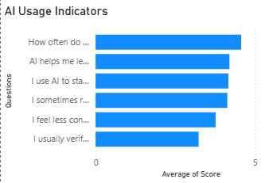
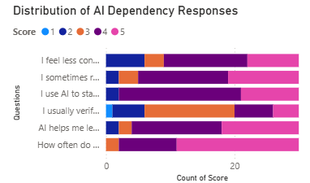
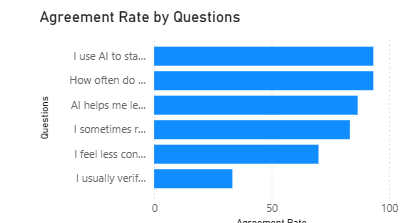

Beyond the Search Bar
Exploring AI Dependence in Academic Life

Hook
A student sits down to begin an assignment.
A few years ago, the process might have started with opening a textbook, searching through lecture notes, or asking a classmate for help.
Today, many students open ChatGPT.
Not because they are unwilling to learn.
Not because they are incapable of solving problems.
Because it is faster.
A concept that once required twenty minutes of searching can now be explained in seconds. A coding error that might have taken hours to debug can be identified almost instantly. For students balancing deadlines, projects, examinations, and placements, the convenience is difficult to resist.
But every shortcut changes the journey.
As AI becomes increasingly integrated into academic life, a new question emerges:
When does assistance become dependence?
Research Question
How is the growing use of AI shaping the way students learn, solve problems, and build academic confidence?
Methodology
To explore this question, a survey was conducted among 30 students using six AI-related indicators.
Students responded to statements on a five-point Likert scale ranging from Strongly Disagree (1) to Strongly Agree (5).
The survey explored themes such as AI usage frequency, learning support, task completion, independent problem-solving, verification of AI-generated responses, and confidence without AI assistance.
The responses were analyzed and visualized using Power BI dashboards to identify patterns in how students interact with AI in their academic lives.
Finding 1: AI Has Quietly Become Part of Everyday Learning

Figure 1. AI Usage Indicators
The strongest pattern emerging from the data was not surprise.
It was normality.
Students reported frequent use of AI tools across a wide range of academic activities, producing an AI Dependency Index of 4.01 out of 5.
Whether learning new concepts, completing assignments, summarizing content, or beginning difficult tasks, AI appears to have become a routine part of student life.
What makes this finding remarkable is how quickly this shift has occurred.
Search engines once helped students find information.
AI now helps them interpret it, organize it, simplify it, and sometimes even apply it.
For many students, AI is no longer an occasional resource.
It has become the place they begin.
The data suggests that AI is not sitting on the edge of the learning experience anymore.
It has moved closer to the center.
Finding 2: The Moment Struggle Meets Convenience

Figure 2. Agreement Rate by Questions
Learning has always involved moments of discomfort.
Confusion.
Trial and error.
Getting stuck.
Yet the survey suggests that many students now turn to AI before attempting problems independently.
On the surface, this behavior seems entirely reasonable.
If an explanation is available immediately, why spend thirty minutes struggling?
However, the findings point toward a deeper tension.
The concern is not that students are using AI.
The concern is what disappears when struggle disappears.
Educational psychologists have long argued that learning often happens during moments of uncertainty. Wrestling with a difficult problem forces students to think critically, test assumptions, and develop resilience.
These moments are rarely enjoyable.
But they are often valuable.
AI removes frustration remarkably well.
The question is whether it also removes part of the process through which understanding develops.
The survey findings suggest that students increasingly face a choice between efficiency and exploration.
And efficiency usually wins.
Finding 3: The Verification Gap

Figure 3. Distribution of AI Dependency Responses
One of the most interesting patterns emerged when comparing AI usage with verification habits.
Students reported high levels of AI usage.
Yet significantly fewer reported consistently checking the accuracy of AI-generated responses.
In other words, trust appears to be growing faster than caution.
This is not unique to students.
People naturally trust tools that repeatedly save time and produce useful results. Over time, convenience creates familiarity, and familiarity creates confidence.
The risk is subtle.
Students may not notice the moment when they stop evaluating information and begin accepting it automatically.
The challenge facing education may no longer be teaching students how to find answers.
It may be teaching students how to question answers.
As AI becomes more capable, critical thinking may become more important—not less.
Student Reflections
Although their experiences differ, a common feeling emerges: students appreciate the speed and support AI provides, yet many remain aware of the possibility that convenience may slowly replace independent effort.
The tension is not between using AI and avoiding AI.
It is between using AI as a tool for learning and allowing it to become a substitute for the learning process itself.
Analysis and Interpretation
The story emerging from the data is not one of technology replacing education.
It is a story about changing habits.
Students have always looked for tools that help them learn more efficiently. AI happens to be the most powerful version of that tool so far.
The challenge is not whether students should use AI.
Most already do.
The challenge is preserving curiosity, critical thinking, and independent reasoning in an environment where answers are available instantly.
Technology has changed how students access knowledge.
The next question is whether it is also changing how they develop it.
If learning becomes increasingly frictionless, students may gain speed and efficiency.
But they may also lose some of the experiences that traditionally helped build confidence, persistence, and problem-solving ability.
The balance between those outcomes remains uncertain.
Conclusion
The findings suggest that AI has become deeply integrated into academic life.
Students use it to learn faster, begin tasks more easily, and overcome academic obstacles.
At the same time, many report relying on AI before attempting problems independently, while verification habits remain inconsistent.
The most important finding is not that students use AI frequently.
It is that AI has quietly become the starting point of learning itself.
For today's students, the challenge is no longer finding answers. The challenge is making sure the ability to think, question, and struggle through problems grows alongside the technology that makes those answers instantly available.